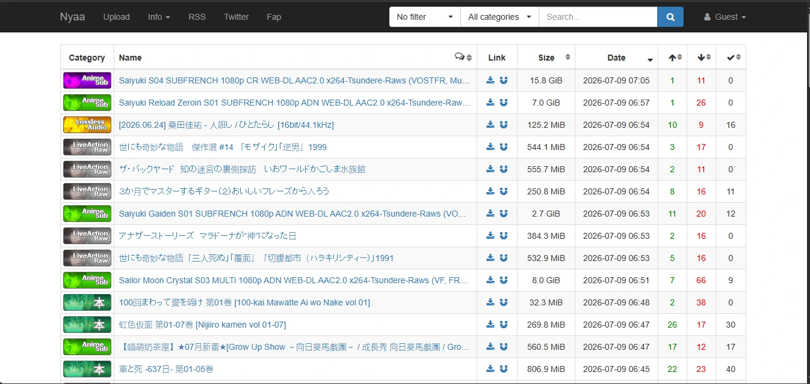
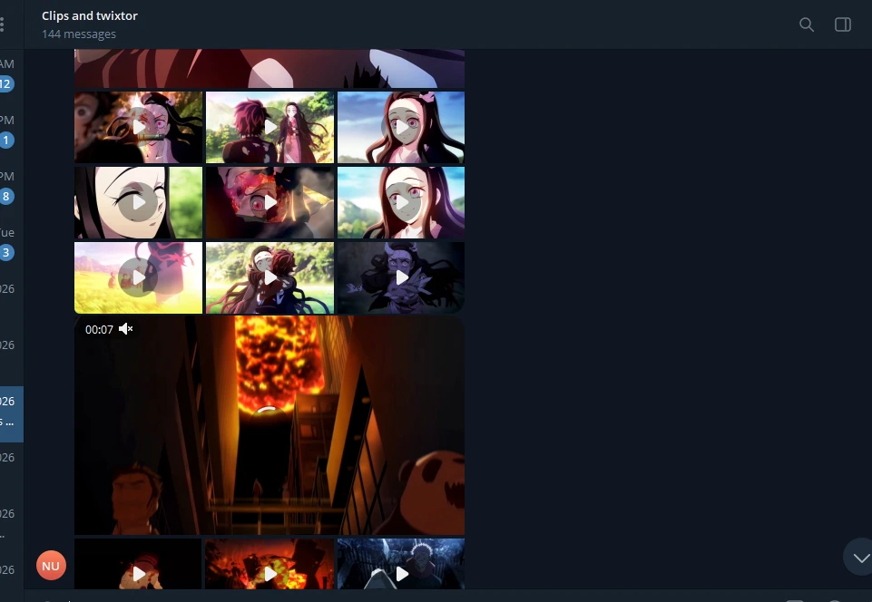
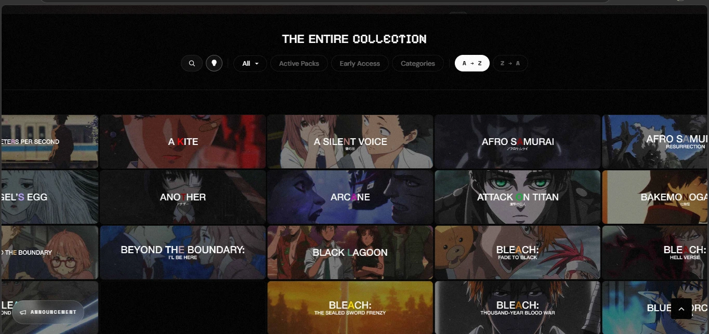
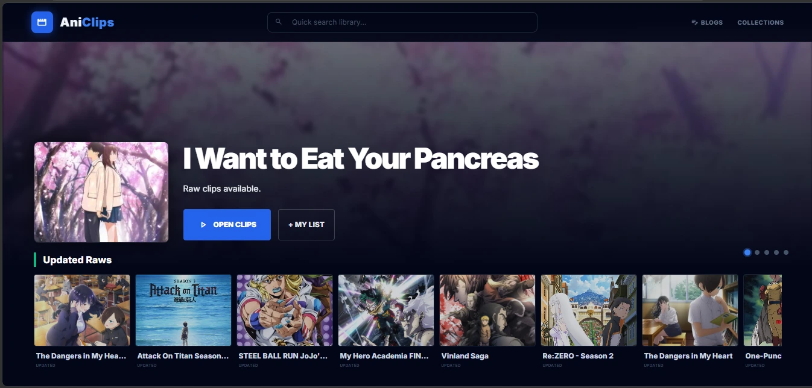

Ten years ago, most editors simply downloaded an entire episode, opened Premiere Pro, searched through the timeline, exported a few seconds, and deleted the video afterwards. Surprisingly, many people still work this way.
The problem isn't that downloading an episode is difficult. The problem is finding the right moment. Modern anime episodes are around twenty-four minutes long. If you're creating short-form content, your final edit might only use three or four seconds from that entire episode.
Multiply that by twenty different scenes across multiple series and suddenly you've spent more time searching than editing. That's why experienced editors have gradually developed different workflows depending on the kind of content they're making.
lightbulbGreat editing isn't just about transitions or effects. It's about being able to find exactly the footage you need before your creative momentum disappears.
Step 1 — Decide What You're Editing
Before downloading anything, decide what type of project you're making. Different editing styles benefit from completely different sources.
Shorts & TikTok Editors
Usually need very short reaction shots, emotional moments, fights and memes. Speed matters much more than downloading pristine Blu-ray quality.
AMV Editors
Prefer longer action scenes with the highest possible quality because effects, color grading and masking reveal compression artifacts quickly.
YouTube Essay Creators
Often need dialogue scenes, reactions and character interactions rather than explosions. Being able to locate specific conversations becomes more important than raw quality.
Meme Editors
Speed wins every time. Waiting ten minutes to download an episode just to grab one facial expression usually isn't worth it.
Step 2 — Where Do Editors Actually Get Anime Clips?
There isn't one perfect source. Every method has strengths, weaknesses and an ideal use case. Let's compare the four workflows you'll see most often in 2026.
Torrents & Blu-ray Raws
If you've ever wondered where experienced AMV editors get incredibly clean footage, the answer is usually torrents. Sites like Nyaa.si have become the community standard because many releases originate from Blu-ray discs or high-quality streaming sources before being re-encoded multiple times across the internet.
The biggest advantage is quality. If you're planning heavy color grading, motion blur, masking or visual effects, starting with cleaner footage gives noticeably better results.
Best For
- ✔ High quality AMVs
- ✔ YouTube projects
- ✔ Long editing sessions
- ✔ Editors who archive footage locally
The downside
Imagine you only need a two-second reaction from Episode 19. You'll often download a 1–3 GB episode, wait for it to finish, import it into your editor, search through twenty-four minutes of footage, export two seconds, then delete the episode. The workflow works—but it's slow.

Scene Packs & Discord Communities
If you're mostly creating TikToks, Instagram Reels or YouTube Shorts, chances are you've already downloaded a scene pack. These are collections of clips shared by editors through Discord servers, Telegram groups, Google Drive folders or Mega links.
Scene packs are popular because someone has already done the work of cutting interesting moments from episodes. Instead of downloading twenty-four minutes of footage, you might only download twenty seconds.
Advantages
- ✔ Fast downloads
- ✔ Ready for editing
- ✔ Great for quick edits
- ✔ No searching through episodes
Drawbacks
- ✘ Links disappear frequently
- ✘ Limited scene selection
- ✘ Often pre-color graded
- ✘ Difficult to find older anime
One important thing to remember is that scene packs only contain what another editor thought was useful. If you're looking for an obscure conversation or a tiny reaction shot, there's a good chance it simply isn't included.

Curated Anime Clip Websites
Some websites focus on collecting visually impressive moments from popular anime. Instead of hosting full episodes, they organize folders containing fights, transformations, emotional scenes and other fan favorites.
These websites are excellent when inspiration matters more than precision. If you simply need "cool anime fights" or "beautiful animation," you'll probably find something quickly.
However, if you're trying to recreate a specific scene you remember from an episode, these collections can become frustrating because they rarely include every conversation, reaction or transition.
Good for discovering. Not always good for searching.
Think of these sites like an art gallery. You'll discover amazing clips—but only the ones someone decided to display.

Examples of Curated Platforms:
- Sakugabooru (Best for specific action sequences and looking up specific animators)
- AnimeClips.online (Best for pre-cut, short editing clips)
- RingwitdaClips / RingwitdaTwixtor (Best for high-quality velocity and slow-motion scenes)
- Comby Raws (Best for finding community-curated Mega/Google Drive folders)
Searchable Clip Libraries
During the last few years a different workflow has slowly become popular among editors. Instead of downloading entire episodes or browsing random folders, searchable clip libraries organize episodes into hundreds of small previewable clips.
The goal isn't necessarily higher quality. The goal is eliminating the time spent searching. Rather than remembering Season 2 Episode 14 at 18:37, you simply browse the episode, preview clips instantly and download only the few seconds you actually need.
This approach is particularly useful for YouTube creators, meme editors and anyone who edits several different anime every week.
Example Workflow
- Open the anime.
- Choose the episode.
- Hover previews until you recognize the scene.
- Download only that clip.
- Continue editing immediately.
This is exactly the problem we built AniClips to solve. Rather than replacing torrents or scene packs, it complements them by making scene discovery dramatically faster.

AniClips vs AnimeClips.online: Which One Is Better?
At first glance, these two websites look very similar. Both are built for anime editors, but they solve different problems.
AnimeClips.online focuses on curation. Instead of clipping every episode, it hand-picks memorable fights, transformations, emotional scenes, and other highlights. With roughly 200 anime and an estimated 6,000–10,000 carefully selected clips, it's a great place to quickly browse visually impressive moments.
AniClips takes a different approach.
Instead of asking "Which scenes should we upload?", we ask "What if editors need a scene nobody thought to save?"
Rather than selecting only highlights, entire episodes are divided into clips. As of July 2026, the library contains 203,878 clips across more than 100 anime, allowing editors to find dialogue, reactions, transitions, and quieter moments that are often missing from curated collections.
Neither approach is universally better—they simply suit different workflows.
| Feature | AnimeClips.online | AniClips |
|---|---|---|
| Library style | Hand-picked highlights | Entire episodes divided into clips |
| Approximate library size | 6,000–10,000 clips | 203,878 clips (July 2026) |
| Anime available | ~200 | 100+ |
| Best for | AMVs, fights, visually impressive moments | Shorts, memes, video essays, reactions, dialogue, and finding specific scenes |
| Strength | Curated, cinematic moments | Broad episode coverage and scene discovery |
If you're creating an action-focused AMV, a curated library may already contain exactly what you need.
If you're trying to find a particular conversation, facial expression, reaction shot, or a moment you remember but can't quite place, a full-episode clip library usually gives you a much better chance of finding it.
Which Method Should You Use?
Instead of asking "Which source is best?", ask "Which source is best for this project?" Here are a few real examples.
Scenario 1
You're making a TikTok edit of Gojo. You only need five reaction shots.
Downloading five complete episodes would waste both time and storage. A searchable clip library or scene pack is usually the faster choice.
Scenario 2
You're creating a cinematic AMV with heavy effects.
Start from Blu-ray raws or high-quality torrent releases. You'll have much cleaner footage to work with throughout the edit.
Scenario 3
You're making a YouTube video explaining a character.
You'll probably need dialogue scenes, facial expressions, reaction shots and quiet conversations—not just fight scenes. This is where searchable libraries become significantly faster than random scene packs.
7 Tips That Save Editors Hours
1. Don't download before you're sure.
Preview footage whenever possible. A five-second preview can save downloading gigabytes of video.
2. Keep a folder of reusable reaction clips.
Many editors repeatedly use similar expressions like laughing, crying, surprise or anger. Building your own library saves time on future projects.
3. Organize clips by emotion—not anime.
Searching "happy", "rage", "running" or "crying" becomes much easier than remembering episode numbers.
4. Bookmark useful episodes.
Some episodes are packed with memorable scenes. Keep a list—you'll revisit them surprisingly often.
5. Don't rely on social media uploads.
Videos uploaded to TikTok, Instagram and X are usually compressed several times. Whenever possible, start from the original source.
6. Save timestamps while watching anime.
If a scene catches your attention, write it down immediately. Your future self will thank you.
7. Spend less time hunting, more time creating.
The best workflow isn't necessarily the one with the highest video quality. It's the one that lets you stay creative without constantly interrupting your editing session.
Quick Comparison
| Method | Quality | Speed | Best For |
|---|---|---|---|
| Torrents | ⭐⭐⭐⭐⭐ | ⭐⭐ | AMVs & Long Projects |
| Scene Packs | ⭐⭐⭐ | ⭐⭐⭐⭐ | Shorts |
| Clip Websites | ⭐⭐⭐⭐ | ⭐⭐⭐ | Inspiration |
| AniClips | ⭐⭐⭐⭐☆ | ⭐⭐⭐⭐⭐ | Finding Specific Scenes |
Common Mistakes New Editors Make
Everyone starts somewhere, but these mistakes can easily add hours to your workflow. Avoiding them won't magically make your edits better, but it will let you spend more time creating instead of troubleshooting.
❌ Downloading entire seasons "just in case"
Many beginners download twenty or thirty gigabytes of footage because they think they'll eventually use it. In reality, most of those files are never opened again. Download only what your current project needs.
❌ Only searching YouTube
YouTube uploads are excellent for discovering scenes, but they're usually compressed, cropped or edited. Once you know what you're looking for, try finding the original source instead.
❌ Ignoring organization
If your Downloads folder contains files named "clip1.mp4", "clip2.mp4" and "new_final_final.mp4", you'll eventually waste more time searching your own PC than searching the internet.
❌ Assuming every project needs Blu-ray quality
If you're uploading a short meme to social media, viewers probably won't notice the difference between a massive Blu-ray file and a good quality web source. Match the source to the project.
Why Finding Anime Scenes Is Surprisingly Difficult
Here's something interesting.
Most people don't remember anime by episode numbers. They remember moments.
- "That scene where Gojo smiled."
- "The moment Levi spun through the air."
- "The speech before the final battle."
- "That funny reaction everyone uses."
Almost nobody remembers:
- Season 2
- Episode 17
- 14 minutes 36 seconds
That's exactly why searching for anime clips often feels harder than editing them. Humans naturally remember emotions, actions and memorable moments—not timestamps.
Why We Built AniClips
While editing anime videos ourselves, we kept running into the same bottleneck.
Finding footage often took longer than editing the footage.
Downloading entire episodes wasn't difficult. Waiting wasn't difficult. Organizing files wasn't difficult.
Repeating that process hundreds of times was.
So instead of creating another folder of random clips, we tried solving the actual problem: helping editors recognize scenes faster.
Instant Preview
Hover over clips and immediately recognize the scene before downloading anything.
Download Only What You Need
Instead of downloading a complete episode, grab the few seconds that actually appear in your timeline.
The idea is simple.
Use torrents when you need maximum quality.
Use scene packs when you need popular edits quickly.
Use curated websites when you're looking for inspiration.
Use AniClips when your biggest problem is simply finding the scene.
Frequently Asked Questions
Where do most anime editors get their clips? expand_more
What's the fastest way to find a specific anime scene? expand_more
Are scene packs enough for professional editing? expand_more
Is there one perfect method? expand_more
Spend Less Time Searching.
Spend More Time Editing.
Every workflow in this guide has its place. Torrents deliver outstanding quality. Scene packs are incredibly convenient. Curated websites help with inspiration. Searchable clip libraries remove the frustration of hunting through episodes.
The best editors don't limit themselves to one source. They simply choose the right tool for the job.
movie Explore AniClips